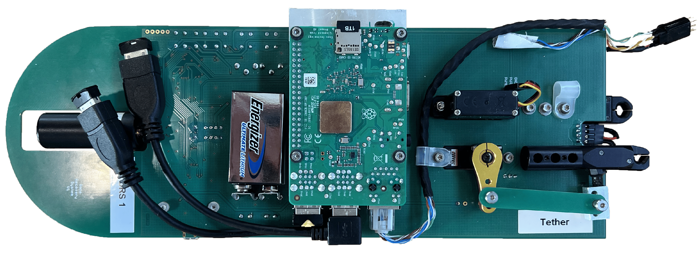

Ellen Sirks, Richard Massey, Ajay Gill, Jason Anderson, Steven Benton, Anthony Brown, Paul Clark, Joshua English, Spencer Everett, Aurelien Fraisse, Hugo Franco, John Hartley, David Harvey, Bradley Holder, Andrew Hunter, Eric Huff, Andrew Hynous, Mathilde Jauzac, William Jones, Nikky Joyce, Duncan Kennedy, David Lagattuta, Jason Leung, Lun Li, Stephen Lishman, Thuy Vy Luu, Jacqueline McCleary, Johanna Nagy, Barth Netterfield, Emaad Paracha, Robert Purcaru, Susan Redmond, Jason Rhodes, Andrew Robertson, Javier Romualdez, Sarah Roth, Robert Salter, Jürgen Schmoll, Mohamed Shaaban, Roger Smith, Russell Smith, Sut Ieng Tam & Georgios Vassilakis
Aerospace 10, 960, see also this press release by the University of Sydney
See also NASA's blog about the SuperBIT mission, SuperBIT's APOD, its launch press release, and coverage at Daily Mail, New Zealand Herald, National Geographic...

The DRS
Ellen Sirks, David Harvey, Richard Massey, Kyloe Oman, Andrew Robertson, Carlos Frenk, Spencer Everett, Ajay Gill & Jacqueline McCleary
Submitted to MNRAS
Jacqueline McCleary, Spencer Everett, Mohamed Shaaban, Ajay Gill, Georgios Vassilakis, Eric Huff, Richard Massey, Steven J. Benton, Anthony Brown, Paul Clark, Bradley Holder, Aurelien Fraisse, Mathilde Jauzac, William C. Jones, David Lagattuta, Jason Leung, Lun Li, Thuy Vy Luu, Johanna M. Nagy, Barth Netterfield, Emaad Paracha, Susan Redmond, Jason Rhodes, Jürgen Schmoll, Ellen Sirks & Sut Ieng Tam
Amy Etherington, James Nightingale, Richard Massey, Sut-Ieng Tam, XiaoYue Cao, Anna Niemiec, Qiuhan He, Andrew Robertson, Ran Li, Aristeidis Amvrosiadis, Shaun Cole, Jose Diego, Carlos Frenk, Brenda Frye, David Harvey, Mathilde Jauzac, Anton Koekemoer, David Lagattuta, Marceau Limousin, Guillaume Mahler, Ellen Sirks & Charles Steinhardt
Submitted to MNRAS
Mohamed Shaaban, Ajay Gill, Jacqueline McCleary, Richard Massey, Steven Benton, Anthony Brown, Christopher Damaren, Tim Eifler, Aurelien Fraisse, Spencer Everett, Mathew Galloway, Michael Henderson, Bradley Holder, Eric Huff, Mathilde Jauzac, William Jones, David Lagattuta, Jason Leung, Lun Li, Thuy Vy Luu Johanna Nagy, C. Barth Netterfield, Susan Redmond, Jason Rhodes, Andrew Robertson, Jurgen Schmoll, Ellen Sirks & Suresh Sivanandam
Ellen Sirks, Kyle Oman, Andrew Robertson, Richard Massey & Carlos Frenk
MNRAS 511, 5927
Ajay Gill, Steven J. Benton, Anthony M. Brown, Paul Clark, Christopher J. Damaren, Tim Eifler, Aurelien A. Fraisse, Mathew N. Galloway, John W. Hartley, Bradley Holder, Eric M. Huff, Mathilde Jauzac, William C. Jones, David Lagattuta, Jason S.-Y Leung, Lun Li, Thuy Vy T. Luu, Richard Massey, Jacqueline McCleary, James Mullaney, Johanna M. Nagy, C. Barth Netterfield, Susan Redmond, Jason D. Rhodes, L. Javier Romualdez, Jurgen Schmoll, Mohamed M. Shaaban, Ellen Sirks, Suresh Sivanandam & Sut-Ieng Tam
AJ 160, 266
Ellen Sirks, Paul Clark, Richard Massey, S. Benton, A. Brown, C. J. Damaren, T. Eifler, A. Fraisse, C. Frenk, M. Funk, M. Galloway, A. Gill, J. Hartley, B. Holder, E. M. Huff, M. Jauzac, W. Jones, D. Lagattuta, J. Leung, L. Li, T. Luu, J. McCleary, J. Nagy, C. Netterfield, S. Redmond, J. Rhodes, L. Romualdez, J. Schmoll, M. Shaaban & S.-I. Tam
JInst 15, 5014
Javier Romualdez, Steven Benton, Anthony Brown, Paul Clark, Christopher Damaren, Tim Eifler, Aurelien Fraisse, Mathew Galloway, Ajay Gill, John Hartley, Bradley Holder, Eric Huff, Mathilde Jauzac, William Jones, David Lagattuta, Jason Leung, Lun Li, Thuy Vy Luu, Richard Massey, Jacqueline McCleary, James Mullaney, Johanna Nagy, C. Barth Netterfield, Susan Redmond, Jason D. Rhodes, Jürgen Schmoll, Mohamed Shaaban, Ellen Sirks & Sut-Ieng Tam
Review of Scientific Instruments 91, 4501
J Harnois-Déraps, A Amon, A Choi, V Demchenko, C Heymans, A Kannawadi, R Nakajima, E Sirks, L van Waerbeke, Yan-Chuan Cai, B Giblin, H Hildebrandt, H Hoekstra, L Miller, T Tröster
MNRAS 481, 1
Charles Cockell, Toby Samuels, Ellen Sirks, Marisa Mayer, Indiarose Friswell, Natasha Nicholson, Ralf Moeller, Katja Nagler, Marina Raguse, Andrea Schröder, Thomas Berger, Petra Rettberg